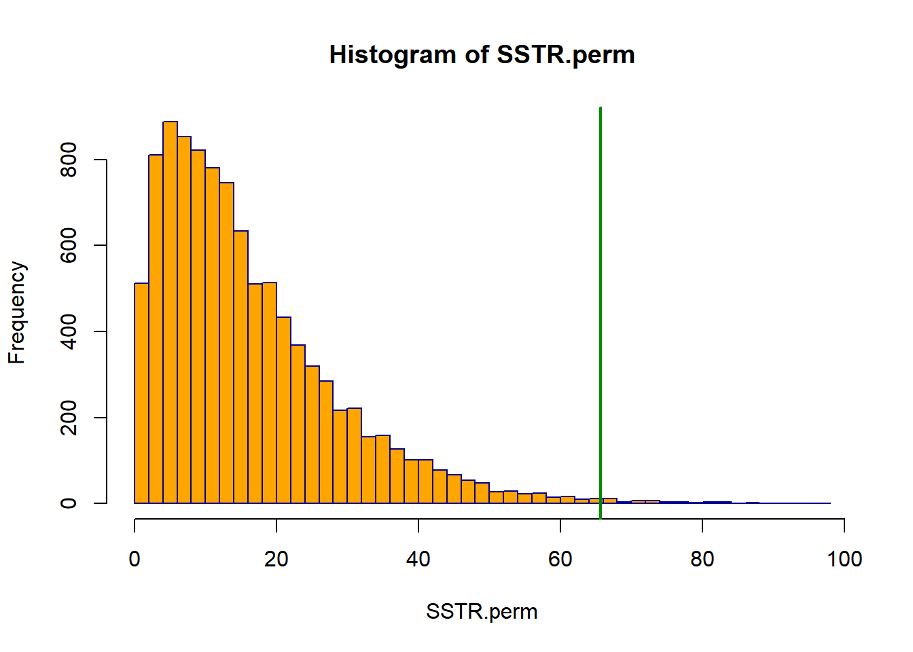
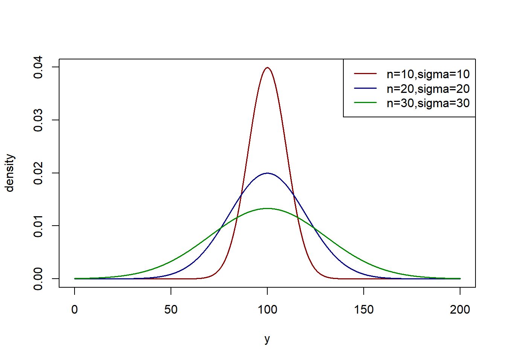

Chapter 5 Alternative Tests for Treatment Effects
In this chapter, we consider tests for the equality of variances among treatments/groups, as well as alternatives to the \(F\)-test that are used in practice.
The tests for equal variances are Levene’s Test, Hartley’s Test, and Bartlett’s Test.
Alternatives to the \(F\)-test are Randomization/Permutation Tests, the Kruskal-Wallis Test, and Welch’s Test. Also, Weighted Least Squares can be implemented with unequal variances.
Three departures of the model assumptions are briefly described below.
- Non-normal Errors - This is generally not too problematic for the \(F\)-test as long as data are not too far from normal with reasonable sample sizes
- Unequal Error Variances - As long as the sample sizes are approximately equal this is not a large problem for the \(F\)-test, but can be an issue with very unbalanced designs.
- Non-independence of Error Terms This can cause issues for the \(F\)-test. If each unit receives each treatment, we can get a stronger test based on a Repeated Measures Design.
5.1 Randomization/Permutation Tests
These tests are based on resampling, and make no assumptions on the distribution of the error terms. The test treats the units observed in the study as a finite population of units with fixed error terms \(\epsilon_{ij}\). The model and hypothesis are of the following forms.
\[ Y_{ij}=\mu_{\bullet} + \tau_i + \epsilon_{ij} \qquad \qquad H_0:\tau_1=\cdots = \tau_r=0 \] The idea is that if this null hypothesis true, the observed values are due only to the units themselves and not to treatment/group differences. A statistic, such as \(F^*\) or \(SSTR\) is computed and saved. Then, many permutations of the \(n_T\) responses are randomly assigned to the treatment labels of sizes \(n_1,\ldots,n_r\). The statistic is computed for each permutation and saved. The \(P\)-value is the number of more extreme values than the observed statistic plus 1, divided by the number of permutations plus 1. That is, the observed value counts in both the numerator and denominator. Often the number of permutations is 9999 in practice.
This test is applied to the lifeboat training data here.
Example 4.1 - Virtual Training for a Lifeboat Launching Task
Here we will apply the Randomization test to the Lifeboat training data. For the original sample, \(SSTR=65.664\). Note that for each permutation, the total sum of squares will be the same, \(SSTO=331.479\), so we can simply save \(SSTR\) from each permuation, as opposed to computing \(F^*\). The R code and output are given below.
## grp.trt procKnow
## 1 1 4.5614
## 2 1 6.6593attach(vt)
### Randomization Test
n.trt <- as.vector(tapply(procKnow, grp.trt, length)) ### Obtain n_1,...,n_4
mean.trt <- as.vector(tapply(procKnow, grp.trt, mean)) ### Obtain ybar_1,...,ybar_4
mean.all <- mean(procKnow) ### Obtain ybar
r <- length(n.trt) ### r = #trts
n_T <- sum(n.trt) ### n_T=Total sample size
(SSTR.obs <- sum(n.trt * (mean.trt - mean.all)^2)) ### Compute the observed SSTR## [1] 65.66393N.perm <- 9999 ### # of permutation samples
set.seed(1234) ### Set seed for reproducibility
SSTR.perm <- rep(0, N.perm) ### Placeholder for SSTR's
for (i in 1:N.perm) {
perm <- sample(1:n_T, n_T, replace=FALSE) ## Random permutation of 1:n_T
Y.perm <- procKnow[perm] ## "Sorts" Y values by perm
mean.trt.perm <- as.vector(tapply(Y.perm, grp.trt, mean)) ## Obtain Perm trt means
SSTR.perm[i] <- sum(n.trt * (mean.trt.perm - mean.all)^2) ## SSTR for perm sample
}
(perm.pvalue <- (sum(SSTR.perm >= SSTR.obs) + 1) / (N.perm + 1)) ## Permutation P-value## [1] 0.005## Histogram with vertical line at observed SSTR
hist(SSTR.perm, breaks="Scott", col="orange", border="blue4")
abline(v = SSTR.obs, col="green4", lwd=2)
The \(P\)-value is 0.005, which is well below 0.05. Only 49 permutations out of 9999 had larger values of \(SSTR\) than the observed data. There is strong evidence of treatment effects. \[\nabla \]
5.2 Tests for Equal Error Variances
In this section, we consider three widely used tests of equal variances among the treatments/groups. They are based on various assumptions and do not always provide the same conclusion. The three tests covered here are Hartley’s Test, Levene’s Test, and Bartlett’s Test. All tests are testing the following hypotheses.
\[ H_0:\sigma_1^2=\cdots = \sigma_r^2 \qquad H_A: \mbox{ Not all } \sigma_i^2 \mbox{ are equal} \]
5.2.1 Hartley’s Test
This test is dependent on the errors being normally distributed. Further, its derivation is based on equal sample sizes. It uses a special table of critical values available in many textbooks and online. There is a R package that purports to generate the critical values, but I have had issues with certain sample sizes/numbers of treatments in obtaining results.
The test statistic \((H)\) is simply the ratio of the largest to smallest variance (not standard deviation), and the critical values are indexed by the number of treatments/groups \((r)\) and the number of degrees of freedom for each sample variance \((n-1)\), where \(n\) is the number of units per treatment.
Example 4.2 - Virtual Training for a Lifeboat Launching Task
For the lifeboat training experiment, there were \(r=4\) treatments and each sample size was \(n=16\). The sample standard deviations are given below. The critical value for this test with \(\alpha=0.05\), \(r=4\), and \(n-1=15\) is \(H_{.95;4,15}=4.01\).
\[ s_1=1.94 \quad s_2=1.43 \quad s_3=2.82 \quad s_4=1.99 \qquad H^*=\frac{\max\left(s_i^2\right)}{\min\left(s_i^2\right)}= \frac{(2.82)^2}{(1.43)^2}=3.89 \]
The test statistic is just below the critical value, so we fail to reject the hypothesis of equal variances.
\[ \nabla \]
5.2.2 Levene’s Test
This test, also known as the Brown-Forsythe test is robust to outliers and does not require equal sample sizes. There are various versions, based on whether deviations from group means or medians are used. For each observation, we compute \(d_{ij}\) as described here.
\[ d_{ij}= \left|Y_{ij}-\tilde{Y}_i\right| \qquad \tilde{Y}_i=\mbox{median}\left(Y_{i1},\ldots ,Y_{in_i}\right) \]
Then an Analysis of Variance is applied to the \(d_{ij}\), with \(\overline{d}_{i\bullet}\) and \(\overline{d}_{\bullet\bullet}\) being the treatment and overall means.
\[ SSTR_L = \sum_{i=1}^rn_i\left(\overline{d}_{i\bullet}- \overline{d}_{\bullet\bullet}\right)^2 \qquad df_{TR}=r-1 \]
\[ SSE_L = \sum_{i=1}^r\sum_{j=1}^{n_i}\left(d_{ij}-\overline{d}_{i\bullet}\right)^2 \qquad df_E = n_T-r \]
Then, just as when we tested for equality of means, we compute the \(F\)-statistic and compare it with \(F_{1-\alpha;r-1,n_T-r}\).
\[ \mbox{Test Statistic:} \quad F_L^* = \frac{\left[\frac{SSTR_L}{r-1}\right]} {\left[\frac{SSE_L}{n_T-r}\right]} \qquad \mbox{Rejection Region:} \quad F_L^* \ge F_{1-\alpha;r-1,n_T-r} \]
Example 4.3 - Virtual Training for a Lifeboat Launching Task
We will first create the \(d_{ij}\) “brute-force”, then use the leveneTest function in the car package.
vt <- read.csv("data/virtual_training.csv")
n.trt <- as.vector(tapply(vt$procKnow, vt$grp.trt, length)) ## n_1,...,n_4
med.trt <- as.vector(tapply(vt$procKnow, vt$grp.trt, median)) ## med_1,...,med_4
vt$med.trt <- rep(med.trt, n.trt) ## Repeat med_1 n_1 times, ...
head(vt, 3); tail(vt, 3) ## grp.trt procKnow med.trt
## 1 1 4.5614 5.67085
## 2 1 6.6593 5.67085
## 3 1 5.6427 5.67085## grp.trt procKnow med.trt
## 62 4 3.2286 6.8485
## 63 4 6.5520 6.8485
## 64 4 9.8754 6.8485vt$d <- abs(vt$procKnow-vt$med.trt) ## Compute d_ij
lev.mod <- lm(d ~ factor(grp.trt), data=vt) ## Run aov function on d_ij's
anova(lev.mod) ## Levene's F-test output## Analysis of Variance Table
##
## Response: d
## Df Sum Sq Mean Sq F value Pr(>F)
## factor(grp.trt) 3 11.108 3.7026 2.1463 0.1038
## Residuals 60 103.506 1.7251## leveneTest (using Y_ij's) from car package
leveneTest(procKnow ~ factor(grp.trt), "median", data=vt) ## Levene's Test for Homogeneity of Variance (center = "median")
## Df F value Pr(>F)
## group 3 2.1463 0.1038
## 60We fail to reject the null hypothesis of equal variances. Note that we ran the leveneTest function on the \(Y_{ij}\) values, not on the with the \(d_{ij}\) values (it creates them internally). \[ \nabla \]
5.2.3 Bartlett’s Test
Bartlett’s test is based on the residuals being normally distributed and can be used in applications beyond ANOVA models, including regression models with categorical predictors. It makes use of the individual variances \(\left\{s_i^2\right\}\) and the pooled \(MSE\) to obtain a chi-square statistic that is defined here.
\[ \mbox{Test Statistic:} \quad X_B^2 = \frac{1}{C}\left[\left(n_T-r\right)\ln(MSE)-\sum_{i=1}^r\left(n_i-1\right)\ln\left(s_i^2\right)\right] \] \[ \mbox{where:}\quad C=1+\frac{1}{3(r-1)}\left[\left(\sum_{i=1}^r\frac{1}{n_i-1}\right)-\left(\frac{1}{n_T-r}\right)\right] \]
\[ \mbox{Rejection Region:} \quad X_B^2 \ge \chi_{1-\alpha;r-1}^2 \qquad P = P\left(\chi_{r-1}^2 \ge X_B^2\right) \]
Example 4.4 - Virtual Training for a Lifeboat Launching Task
For the lifeboat training experiment, there were \(r=4\) treatments and each sample size was \(n=16\). The sample variances are given below. The critical value for this test with \(\alpha=0.05\) and \(r=4\) is \(\chi_{.95;4-1}=7.815\).
\[ s_1^2=3.764 \quad s_2^2=2.045 \quad s_3^2=7.952 \quad s_4^2=3.960 \qquad MSE=4.430 \]
\[ \left(n_T-r\right)\ln(MSE) = 89.304 \qquad \sum_{i=1}^r\left(n_i-1\right)\ln\left(s_i^2\right)=82.358 \]
\[ C=1+\frac{1}{3(r-1)}\left[\left(\sum_{i=1}^r\frac{1}{n_i-1}\right)-\left(\frac{1}{n_T-r}\right)\right]=1+\frac{1}{9}\left[\frac{4}{16-1}-\frac{1}{64-4}\right]=1.028 \]
\[ \mbox{Test Statistic:} \quad X_B^2 = \frac{1}{1.028}(89.304-82.358)=6.757 \qquad P=P\left(\chi_3^2 \ge 6.757\right)=.0801 \]
Finally, we use the bartlett.test function in R to conduct the test.
##
## Bartlett test of homogeneity of variances
##
## data: procKnow by factor(grp.trt)
## Bartlett's K-squared = 6.7626, df = 3, p-value = 0.07986\[ \nabla \]
5.3 Remedial Measures
In this section, several procedures are considered for issues of normality and/or unequal variances among the error terms. Methods will include Weighted Least Squares and Welch’s Test when the errors are normal, but the error variances are unequal (heteroscedastic).
When variances are non-normal and heteroscedastic, transformations can be applied to \(Y\) that may solve both problems. These include the Box-Cox Transformation, and were covered in the Linear Regression course.
When the distributions are highly skewed, non-parametric tests can be conducted based on ranks. We will describe the Kruskal-Wallis Test.
5.3.1 Weighted Least Squares and Welch’s Test
Consider the following scenario and simulation.
- There are \(r=3\) Treatments with equal means \(\left(\mu_1=\mu_2=\mu_3\right)\)
- The Treatments have unequal standard deviations (and thus variances)
- The Treatments have equal or unequal sample sizes
Note that the null hypothesis \(H_0:\mu_1=\mu_2=\mu_3\) holds, so optimally, the rejection rate based on the \(F\)-test with significance level \(\alpha\) should be approximately \(\alpha\). We will simulate datasets for the following scenarios, all with \(\mu=100\) for all treatments, and normal error terms.
- Scenario 1 - \(n_1=n_2=n_3=20\quad \sigma_1=\sigma_2=\sigma_3=20\) (standard assumptions)
- Scenario 2 - \(n_1=n_2=n_3=20 \quad \sigma_1=10,\sigma_2=20,\sigma_3=30\)
- Scenario 3 - \(n_1=10,n_2=20,n_3=30 \quad \sigma_1=10,\sigma_2=20,\sigma_3=30\)
- Scenario 4 - \(n_1=30,n_2=20,n_3=10 \quad \sigma_1=10,\sigma_2=20,\sigma_3=30\)
Each scenario will be run, and the rejection rate will be reported in each case. The program below is the same for each scenario with only the inputs for n and sigma changing.
## Scenario 3
mu <- rep(100,3)
sigma <- c(10,20,30) ## Change these for various scenarios
n <- c(10,20,30) ## Change these for various scenarios
y.grid <- seq(0,200,.025)
plot(y.grid, dnorm(y.grid,mu[1],sigma[1]), type="l", col="red4",lwd=1.5,
xlab="y", ylab="density")
lines(y.grid, dnorm(y.grid,mu[2],sigma[2]), col="blue4",lwd=1.5)
lines(y.grid, dnorm(y.grid,mu[3],sigma[3]), col="green4",lwd=1.5)
legend("topright", c("n=10,sigma=10","n=20,sigma=20","n=30,sigma=30"),
col=c("red4", "blue4", "green4"), lty=1, lwd=1.5)
set.seed(32611)
N.samp <- 10000
n_T <- sum(n)
r <- length(n)
trt.grp <- rep(1:3,c(n[1],n[2],n[3]))
F.stat <- rep(0,N.samp)
for (i1 in 1:N.samp) {
y1 <- rnorm(n[1],mu[1],sigma[1])
y2 <- rnorm(n[2],mu[2],sigma[2])
y3 <- rnorm(n[3],mu[3],sigma[3])
y123 <- c(y1,y2,y3)
ybar1 <- mean(y1); var1 <- var(y1)
ybar2 <- mean(y2); var2 <- var(y2)
ybar3 <- mean(y3); var3 <- var(y3)
ybar123 <- mean(y123)
SSTR <- n[1]*(ybar1-ybar123)^2 + n[2]*(ybar2-ybar123)^2 +
n[3]*(ybar3-ybar123)^2
SSE <- (n[1]-1)*var1 + (n[2]-1)*var2 + (n[3]-1)*var3
F.stat[i1] <- ( (SSTR/(r-1)) / (SSE/(n_T-r)) )
}
summary(F.stat)## Min. 1st Qu. Median Mean 3rd Qu. Max.
## 4.730e-05 1.601e-01 4.145e-01 6.918e-01 9.044e-01 1.322e+01## [1] 0.022Each scenario was run on 10000 simulated data sets with \(\alpha=0.05\). The following results were obtained based on the seed 32611.
- Scenario 1 - Equal variances, Equal sample sizes. Rejection Rate = .0513
- Scenario 2 - Unequal variances, Equal sample sizes. Rejection Rate = .0573
- Scenario 3 - Increasing variances, Increasing sample sizes. Rejection Rate = .0220.
- Scenario 4 - Increasing variances, Decreasing sample sizes. Rejection Rate = .1637
The primary result is that as long as sample sizes are equal (or very similar), the \(F\)-test performs well whether the variances are equal or not (both Scenarios 1 and 2 have rejection rates close to \(\alpha\)).
When the sample sizes are positively correlated with the variance (Scenario 3), the rejection rate was well below \(\alpha\) \((.0220<.05)\). Thus, when the larger (smaller) samples correspond to the larger (smaller) variances the \(F\)-test rejects less often than it should.
When the sample sizes are negatively correlated with the variance (Scenario 4), the rejection rate was well above \(\alpha\) \((.1637>.05)\). Thus, when the smaller (larger) samples correspond to the larger (smaller) variances the \(F\)-test rejects more often than it should.
Estimated Weighted Least Squares can be used when the error variances are unequal. The estimated weights for the individual measurements is the reciprocal of the variance of the measurements within that treatment/group, \(w_{ij}=1/s_i^2\). It is much easier doing direct computations in matrix form than in scalar form. A sketch of the method is given below for the cell means model with balanced data: \(n_1=\cdots=n_r=n\), although it can be easily generalized for unequal sample sizes. Let \(I_n\) be the \(n\times n\) identity matrix and \(0_n\) be the \(n\times n\) matrix of \(0^s\). The \(n_T\times r\) matrix \(X\) and the \(n_T\times 1\) vector \(Y\) are described in Chapter 2.
\[ \hat{V}= \begin{bmatrix} s_1^2I_n & 0_n & \cdots & 0_n \\ 0_n & s_2^2I_n & \cdots & 0_n \\ \vdots & \vdots & \ddots & \vdots \\ 0_n & 0_n & \cdots & s_r^2I_n \\ \end{bmatrix} \qquad X^*=\hat{V}^{-1/2}X \qquad Y^*=\hat{V}^{-1/2}Y \]
\[ H^*= X^*\left(X^{*'}X^*\right) ^{-1}X^{*'} \qquad SSE_W(F)=Y^{*'}\left(I_{n_T}-H^*\right)Y^* \quad df_E(F)=n_T-r \] Under the null hypothesis \(H_0:\mu_1=\cdots\mu_r=\mu\), the \(X_0\) matrix is the \(n_T\times 1\) vector of \(1^s\). In this (null) case we obtain the reduced \(SSE\) below.
\[ X_0^*=\hat{V}^{-1/2}X_0 \quad H_0^*= X_0^*\left(X_0^{*'}X_0^*\right) ^{-1}X_0^{*'} \qquad SSE_W(R)=Y^{*'}\left(I_{n_T}-H_0^*\right)Y^* \quad df_E(R)=n_T-1 \] The test statistic and rejection region for the general linear test are given below.
\[ \mbox{Test Statistic:} \quad F_{EWLS}^*= \frac{ \left[\frac{\left(SSE_W(R)-SSE_W(F)\right)} {\left(n_T-1\right)-\left(n_T-r\right)}\right]} {\left[\frac{SSE_W(F)}{n_T-r}\right]} \qquad \mbox{Rejection Region:} F_{EWLS}^* \ge F_{1-\alpha,r-1,n_T-r} \]
Example 4.5 - Virtual Training for a Lifeboat Launching Task
For the lifeboat training experiment, there were \(r=4\) treatments and each sample size was \(n=16\). The following R code runs the matrix form of the general linear test and obtains the sample standard deviation by treatment and creates \(\hat{V}^{-1/2}\) matrix and runs the generalized linear test directly. Then the model is fit using the weight command in the aov function.
vt <- read.csv("data/virtual_training.csv")
### Matrix form
Vhat_12 <- matrix(rep(0,64^2),ncol=64) ## Construct estimated V^{-1/2} matrix
trt.sd <- as.vector(tapply(vt$procKnow, vt$grp.trt, sd)) ## Obtain s_1,...,s_4
## V^{-1/2} matrix = diag{1/s_i}
Vhat_12[1:16,1:16] <- (1/trt.sd[1])*diag(16)
Vhat_12[17:32,17:32] <- (1/trt.sd[2])*diag(16)
Vhat_12[33:48,33:48] <- (1/trt.sd[3])*diag(16)
Vhat_12[49:64,49:64] <- (1/trt.sd[4])*diag(16)
one <- matrix(rep(1,16),ncol=1) ## 16x1 vector of 1's
zero <- matrix(rep(0,16),ncol=1) ## 16x1 vector of 0's
## Construct X matrix for cell means model
X <- cbind(rbind(one,zero,zero,zero),
rbind(zero,one,zero,zero),
rbind(zero,zero,one,zero),
rbind(zero,zero,zero,one))
Y <- vt$procKnow
Xstar <- Vhat_12 %*% X ## X*
Ystar <- Vhat_12 %*% Y ## Y*
Hstar <- Xstar %*% solve(t(Xstar)%*%Xstar) %*% t(Xstar) ## H*
I_64 <- diag(64) ## I_64
SSE_W.F <- t(Ystar) %*% (I_64-Hstar) %*% Ystar ## SSE_W(F)
dfE.F <- 64-4 ## df_E(F)
X_0 <- rbind(one,one,one,one) ## X_0
Xstar_0 <- Vhat_12 %*% X_0 ## X_0*
Hstar_0 <- Xstar_0 %*% solve(t(Xstar_0)%*%Xstar_0) %*% t(Xstar_0) ## H_0*
SSE_W.R <- t(Ystar) %*% (I_64-Hstar_0) %*% Ystar ## SSE_W(R)
dfE.R <- 64-1 ## df_E(R)
## EWLS F-test and Output
F_EWLS <- ((SSE_W.R-SSE_W.F) / (dfE.R-dfE.F)) / (SSE_W.F/dfE.F)
WLS.out <- cbind(dfE.F,dfE.R,SSE_W.F,SSE_W.R,F_EWLS,qf(.95,dfE.R-dfE.F,dfE.F),
1-pf(F_EWLS,dfE.R-dfE.F,dfE.F))
colnames(WLS.out) <- c("df(F)", "df(R)", "SSE(F)", "SSE(R)", "F*","F(.95)", "P(>F*)")
rownames(WLS.out) <- c("EWLS")
round(WLS.out,4)## df(F) df(R) SSE(F) SSE(R) F* F(.95) P(>F*)
## EWLS 60 63 60 81.3196 7.1065 2.7581 4e-04##################################################################
## Using aov function with treatment variances as weights
## Obtain treatment sample sizes and variances
n.trt <- as.vector(tapply(vt$procKnow, vt$grp.trt, length))
var.trt <- as.vector(tapply(vt$procKnow, vt$grp.trt, var))
## String out weights = 1/var so that weight i is replicated n_i times
vt$virt.wt <- rep(1/var.trt, n.trt)
## Weighted Least Squares ANOVA
aov.wt <- aov(procKnow ~ factor(grp.trt), weight=virt.wt, data=vt)
anova(aov.wt)## Analysis of Variance Table
##
## Response: procKnow
## Df Sum Sq Mean Sq F value Pr(>F)
## factor(grp.trt) 3 21.32 7.1065 7.1065 0.0003655 ***
## Residuals 60 60.00 1.0000
## ---
## Signif. codes: 0 '***' 0.001 '**' 0.01 '*' 0.05 '.' 0.1 ' ' 1## Analysis of Variance Table
##
## Response: procKnow
## Df Sum Sq Mean Sq F value Pr(>F)
## factor(grp.trt) 3 65.664 21.8880 4.9406 0.003931 **
## Residuals 60 265.815 4.4302
## ---
## Signif. codes: 0 '***' 0.001 '**' 0.01 '*' 0.05 '.' 0.1 ' ' 1\[ \nabla \]
Welch’s Test was developed to handle the issues that arise in Scenarios 3 and 4 above. The method involves computing a weighted \(F\)-statistic for testing for treatment effects. The weights for the treatment means are the reciprocals of their variances, \(w_i=n_i/s_i^2\). The procedure (which is easy to run in a spreadsheet or statistical package) computes the weighted \(F\)-statistic and generates multiples of that statistic and the error degrees of freedom to achieve an approximate \(F\)-distribution for the test statistic.
A sketch of the calculations is given below. Note that all calculations are based on the treatment/group sample sizes, means, and variances.
\[ w_i = \frac{n_i}{s_i^2} \quad w_{\bullet}=\sum_{i=1}^rw_i \quad C_W=\sum_{i=1}^r\left[\frac{1}{n_i-1}\left(1-\frac{w_i}{w_{\bullet}}\right) \right] \quad m_W=\left[1+\frac{2(r-2)}{r^2-1}C_W\right]^{-1} \]
\[ F^*=\frac{1}{r-1}\left[\sum_{i=1}^rw_i\left(\overline{y}_{i\bullet}\right)^2 - \frac{\left(\sum_{i=1}^rw_i\overline{y}_{i\bullet}\right)^2}{w_{\bullet}}\right] \qquad\qquad \nu_W=\frac{r^2-1}{3C_W} \]
\[ F_W=m_WF^* \stackrel{\cdot}{\sim}F_{r-1,\nu_W} \]
Example 4.6 - Virtual Training for a Lifeboat Launching Task
For the lifeboat training experiment, there were \(r=4\) treatments and each sample size was \(n=16\). The following R code produces Welch’s \(F_W\)-test directly from the treatment means, variances, and sample sizes as well as using the oneway.test function in R.
vt <- read.csv("data/virtual_training.csv")
### Brute-Force Computation of Welch's F_W-test
vt.n <- as.vector(tapply(vt$procKnow,vt$grp.trt,length))
vt.mean <- as.vector(tapply(vt$procKnow,vt$grp.trt,mean))
vt.var <- as.vector(tapply(vt$procKnow,vt$grp.trt,var))
vt.r <- length(vt.n)
vt.n_T <- sum(vt.n)
vt.wt <- vt.n / vt.var
vt.wt.sum <- sum(vt.wt)
vt.C_W <- sum((1/(vt.n-1)) * (1-vt.wt/vt.wt.sum)^2)
vt.m_W <- 1 / (1 + vt.C_W*2*(vt.r-2)/(vt.r^2-1))
vt.Fstar <- (1/(vt.r-1)) * (sum(vt.wt*vt.mean^2) - (sum(vt.wt*vt.mean)^2)/vt.wt.sum)
vt.nu_W <- (vt.r^2-1) / (3*vt.C_W)
vt.F_W <- vt.m_W * vt.Fstar
welch.out <- cbind(vt.r-1,vt.nu_W,vt.F_W,qf(.95,vt.r-1,vt.nu_W),1-pf(vt.F_W,vt.r-1,vt.nu_W))
colnames(welch.out) <- c("df1", "df2", "F_W*", "F(.95)", "P(>F_W*)")
rownames(welch.out) <- c("Welch's F-test")
round(welch.out,4)## df1 df2 F_W* F(.95) P(>F_W*)
## Welch's F-test 3 32.5622 6.827 2.8957 0.0011##
## One-way analysis of means (not assuming equal variances)
##
## data: procKnow and factor(grp.trt)
## F = 6.827, num df = 3.000, denom df = 32.562, p-value = 0.0010725.3.2 Post-hoc Comparisons with Unequal Variances
The Games-Howell method can be used to make pairwise comparisons among all pairs of treatments when variances are unequal. Like Tukey’s method, it makes use of the studentized range distribution. It makes use of Satterthwaite’s approximation for the degrees of freedom for each pair of means.
\[ \nu_{ii'}=\frac{\left(\frac{s_i^2}{n_i}+\frac{s_{i'}^2}{n_{i'}}\right)^2} {\frac{\left(\frac{s_i^2}{n_i}\right)^2}{n_i-1} + \frac{\left(\frac{s_{i'}^2}{n_{i'}}\right)^2}{n_{i'}-1}} \qquad \qquad GH_{ii'}=\frac{q_{1-\alpha;r,\nu_{ii'}}}{\sqrt{2}}\sqrt{\frac{s_i^2}{n_i}+\frac{s_{i'}^2}{n_{i'}}} \]
Conclude \(\mu_i\ne\mu_{i'}\) if \(\left|\overline{y}_{i\bullet}-\overline{y}_{i'\bullet}\right| \ge GH_{ii'}\). Simultaneous \((1-\alpha)100\%\) Confidence Intervals for \(\mu_i-\mu_{i'}\) are of the form \(\left(\overline{y}_{i\bullet}-\overline{y}_{i'\bullet}\right)\pm GH_{ii'}\).
Example 4.7 - Virtual Training for a Lifeboat Launching Task
For the lifeboat training experiment, there were \(r=4\) treatments and each sample size was \(n=16\). The following R code computes Simultaneous 95% Confidence Intervals and adjusted \(P\)-values based on the Games-Howell method.
## grp.trt procKnow
## 1 1 4.5614
## 2 1 6.6593### Brute-Force Computation of Games-Howell Comparisons
games_howell <- function(y,trt,alpha) {
ybar <- mean(y)
ybar.trt <- as.vector(tapply(y,trt,mean))
var.trt <- as.vector(tapply(y,trt,var))
rep.trt <- as.vector(tapply(y,trt,length))
num.trt <- length(ybar.trt)
num.pairs <- num.trt*(num.trt-1)/2
sse <- sum((rep.trt-1)*var.trt)
mse <- sse/(sum(rep.trt)-num.trt)
i1.i2 <- matrix(rep(0,2*num.pairs),ncol=2)
ybar.diff <- rep(0,num.pairs)
gh.df <- rep(0,num.pairs)
gh.msd <- rep(0,num.pairs)
gh.LL <- rep(0,num.pairs)
gh.UL <- rep(0,num.pairs)
gh.adjpv <- rep(0,num.pairs)
pair <- 0
for(i1 in 2:num.trt) {
for (i2 in 1:(i1-1)) {
pair <- pair + 1
i1.i2[pair,] <- cbind(i1,i2)
ybar.diff[pair] <- ybar.trt[i1] - ybar.trt[i2]
gh.df[pair] <-
(var.trt[i1]/rep.trt[i1] + var.trt[i2]/rep.trt[i2])^2 /
((var.trt[i1]/rep.trt[i1])^2/(rep.trt[i1]-1) +
(var.trt[i2]/rep.trt[i2])^2/(rep.trt[i2]-1))
gh.msd[pair] <-
(qtukey(1-alpha,num.trt,gh.df[pair])/sqrt(2)) *
sqrt(var.trt[i1]/rep.trt[i1]+var.trt[i2]/rep.trt[i2])
gh.LL[pair] <- ybar.diff[pair]-gh.msd[pair]
gh.UL[pair] <- ybar.diff[pair]+gh.msd[pair]
gh.q <- sqrt(2)*ybar.diff[pair]/sqrt(var.trt[i1]/rep.trt[i1]+var.trt[i2]/rep.trt[i2])
gh.adjpv[pair] <- 1-ptukey(abs(gh.q),num.trt,gh.df[pair])
}
}
gh.out <- cbind(i1.i2,ybar.diff,gh.df,gh.msd,gh.LL,gh.UL,gh.adjpv)
colnames(gh.out) <- c("Trt i", "Trt i'", "Ybar diff","df", "MSD", "LL", "UL", "Adj P")
round(gh.out,4)
}
games_howell(vt$procKnow, vt$grp.trt, .05)## Trt i Trt i' Ybar diff df MSD LL UL Adj P
## [1,] 2 1 2.7778 27.5847 1.6466 1.1312 4.4244 0.0005
## [2,] 3 1 1.8056 26.5999 2.3440 -0.5384 4.1495 0.1759
## [3,] 3 2 -0.9722 22.2357 2.1931 -3.1654 1.2209 0.6150
## [4,] 4 1 1.9444 29.9806 1.8893 0.0552 3.8337 0.0418
## [5,] 4 2 -0.8333 27.2301 1.6756 -2.5089 0.8422 0.5340
## [6,] 4 3 0.1389 26.9707 2.3614 -2.2226 2.5003 0.9985### Using the gamesHowellTest function in PMCMRplus package (gives adjusted P-values)
gamesHowellTest(procKnow ~ grp.trt, data=vt)##
## Pairwise comparisons using Games-Howell test## data: procKnow by grp.trt## 1 2 3
## 2 0.00046 - -
## 3 0.17589 0.61503 -
## 4 0.04183 0.53405 0.99848##
## P value adjustment method: none## alternative hypothesis: two.sidedTreatment 2 (Monitor/Keyboard) is significantly higher than Treatment 1 (Lecture/Materials) and Treatment 4 (Head Mounted Display/Wearable sensors) is significantly higher than Treatment 1.
\[ \nabla \]
Finally, we simulate Welch’s Test for Scenario 4 described previously where \(\mu_1=\mu_2=\mu_3=100\), \(\sigma_1=10,\sigma_2=20,\sigma_3=30\), and \(n_1=30,n_2=20,n_3=10\).
## Min. 1st Qu. Median Mean 3rd Qu. Max.
## 0.000788 0.419304 1.053916 1.754281 2.301317 37.070308## [1] 0.1637## [1] 0.0562The ANOVA \(F\)-test rejected the null hypothesis in 16.37% of the samples, while Welch’s \(F_W\)-test rejected it in 5.62% of the samples, much closer to the target of 5%.
5.4 Nonparametric Test for Non-normal Data
The Kruskal-Wallis Test is a rank based test used in cases where the errors are not normally distributed. In particular, outlying observations, which have large impacts on the means and standard deviations have smaller impact when measurements are replaced by ranks.
The \(n_T\) observations are ranked from 1 (smallest) to \(n_T\) (largest), with ties being given the average of the ranks they would have received if not exactly equal. For instance, if two observations tie for the smallest value, they would each receive the rank of 1.5, and the next smallest observation would get the rank of 3. The sum of the ranks is \(1+\cdots+n_T=n_T\left(n_T+1\right)/2\).
Once the individual measurements are ranked, rank sums are obtained for each treatment/group, as well as the Kruskal-Wallis \(H\)-statistic, which under the null hypothesis of equal medians \(H_0:M_1=\cdots=M_r\) follows a chi-square distribution with \(r-1\) degrees of freedom approximately.
\[ R_{ij} = \mbox{rank}\left(Y_{ij}\right) \mbox{ among } Y_{11},\ldots Y_{rn_r} \qquad R_{i\bullet} = \sum_{j=1}^{n_i}R_{ij} \] \[ \mbox{Test Statistic:} \quad H^*=\left[\frac{12}{n_T\left(n_T+1\right)}\sum_{i=1}^r\frac{R_{i\bullet}^2}{n_i}\right] - 3\left(n_T+1\right) \] \[ \mbox{Rejection Region:} \quad H^* \ge \chi_{r-1}^2 \qquad P=P\left(\chi_{r-1}^2 \geq H^*\right) \] When there are ties, an adjustment can be made to \(H^*\), that rarely makes a large effect. Let the number of groups with ties be \(g\) and let the \(k^{th}\) group have \(t_k\) tied observations. Then, the adjusted test statistic is given below.
\[ \mbox{Test Statistic:} \quad H^{*'} = \frac{H^*} {\left[1- \frac{\sum_{k=1}^g\left(t_k-1\right)t_k\left(t_k+1\right)} {\left(n_T-1\right)n_T\left(n_T+1\right)} \right]} \]
When the null hypothesis of equal medians is rejected, approximate Confidence Intervals for the differences in mean ranks among the \(g=r(r-1)/2\) pairs of treatments are computed as follows.
\[ \left(\overline{R}_{i\bullet}-\overline{R}_{i'\bullet}\right) \pm z_{1-\alpha/(2g)} \sqrt{\frac{n_T\left(n_T+1\right)}{2} \left(\frac{1}{n_i}+\frac{1}{n_{i'}}\right)} \]
Example 4.8 - Virtual Training for a Lifeboat Launching Task
For the lifeboat training experiment, there were \(r=4\) treatments and each sample size was \(n=16\). We will directly compute the ranks, test, and multiple comparisons. Then the kruskal.test function will be used. Note that the rank function in R correctly adjusts ranks for ties. The null hypothesis is that the population medians are equal for the \(r=4\) treatments.
## grp.trt procKnow
## 1 1 4.5614
## 2 1 6.6593### Direct calculations
vt$rankY <- rank(vt$procKnow) ## Ranks of Y values
sum.rank <- as.vector(tapply(vt$rankY, vt$grp.trt, sum)) ## Rank sums R_1,...,R_4
n.rank <- as.vector(tapply(vt$rankY, vt$grp.trt, length)) ## n_1,...,n_4
r <- length(n.rank)
n_T <- sum(n.rank)
KW.stat <- (12/(n_T*(n_T+1))) * sum(sum.rank^2/n.rank) - 3*(n_T+1) ## K-W H* statistic
## Set-up and print output
KW.out <- cbind(KW.stat, r-1, qchisq(.95,r-1), 1-pchisq(KW.stat,r-1))
colnames(KW.out) <- c("KW stat", "df", "X2(.95)", "P(>KW)")
rownames(KW.out) <- c("Kruskal-Wallis Test")
round(KW.out,4)## KW stat df X2(.95) P(>KW)
## Kruskal-Wallis Test 12.9151 3 7.8147 0.0048## Function for pairwise comparisons of medians
KW.CI <- function(y, trt, alpha) {
rank.y <- rank(y)
rank.trt <- as.vector(tapply(rank.y,trt,mean))
rep.trt <- as.vector(tapply(rank.y,trt,length))
num.trt <- length(rank.trt)
num.pairs <- num.trt*(num.trt-1)/2
i1.i2 <- matrix(rep(0,2*num.pairs),ncol=2)
rbar.diff <- rep(0,num.pairs)
r.msd <- rep(0,num.pairs)
r.LL <- rep(0,num.pairs)
r.UL <- rep(0,num.pairs)
r.adjpv <- rep(0,num.pairs)
pair <- 0
for(i1 in 2:num.trt) {
for (i2 in 1:(i1-1)) {
pair <- pair + 1
i1.i2[pair,] <- cbind(i1,i2)
rbar.diff[pair] <- rank.trt[i1] - rank.trt[i2]
r.msd[pair] <-
qnorm(1-alpha/(2*num.pairs)) *
sqrt((n_T*(n_T+1)/12)*(1/rep.trt[i1]+1/rep.trt[i2]))
r.LL[pair] <- rbar.diff[pair]-r.msd[pair]
r.UL[pair] <- rbar.diff[pair]+r.msd[pair]
r.pv<-
2*(1-pnorm(abs(rbar.diff[pair]/sqrt((n_T*(n_T+1)/12)*(1/rep.trt[i1]+1/rep.trt[i2])))))
r.adjpv[pair] <- min(1,num.pairs*r.pv)
}
}
r.out <- cbind(i1.i2,rbar.diff,r.msd,r.LL,r.UL,r.adjpv)
colnames(r.out) <- c("Trt i", "Trt i'", "Rank diff", "MSD", "LL", "UL", "Adj P")
round(r.out,4)
}
KW.CI(vt$procKnow, vt$grp.trt, 0.05)## Trt i Trt i' Rank diff MSD LL UL Adj P
## [1,] 2 1 22.625 17.3671 5.2579 39.9921 0.0035
## [2,] 3 1 16.875 17.3671 -0.4921 34.2421 0.0622
## [3,] 3 2 -5.750 17.3671 -23.1171 11.6171 1.0000
## [4,] 4 1 15.250 17.3671 -2.1171 32.6171 0.1231
## [5,] 4 2 -7.375 17.3671 -24.7421 9.9921 1.0000
## [6,] 4 3 -1.625 17.3671 -18.9921 15.7421 1.0000##
## Kruskal-Wallis rank sum test
##
## data: procKnow by grp.trt
## Kruskal-Wallis chi-squared = 12.915, df = 3, p-value = 0.004824The test concludes that the medians are not all equal. Based on the simultaneous comparisons, conclude that the median for treatment 2 (Monitor/Keyboard) is significantly higher than that for treatment 1 (Lecture/Materials). No other medians are significantly different.
\[\nabla \]